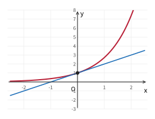

ホーム ＞ 数学III ＞ 微分法の応用
すべての実数 \(x\) について \(e^{1x}\geqq1+x\) が成り立つことを証明せよ。
差を \(f(x)\) とおき、最小値が 0 になることを増減で示す。接線の下に曲線がない（下に凸）という見方もできる。
\(f(x)=e^{1x}-(1+x)\)。\[f'(x)=1e^{1x}-1=1(e^{1x}-1)\]
\(f'(x)=0\) は \(x=0\)。\(x<0\) で減少、\(x>0\) で増加。

\[f(0)=1-1=0\ \Rightarrow\ f(x)\geqq0\]
等号は \(x=0\)。
【答案（テストに書く形）】
答